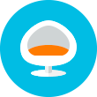

преимущества салона
Все специалисты и мастера нашего престижного салона красоты работают на косметике элитных марок: Alterna, Kydra, Joico, Secret Professional, La Ric, Leighton Denny, Decleor, Pharmaskincare, HydroPeptide, Heliabrine. Успешно пройдя клинические исследования, вся продукция была одобрена экспертами мирового уровня. Мы всегда предлагаем Вам только самое лучшее, поэтому всю косметику сначала пробуем на себе.
Удобное время работы, без выходных

Комфортный зал для ожидания
Комфортный зал для ожидания
Шаговая доступность от метро метро
Весь спектр косметических услуг для Вас
Доступная стоимость наших услуг
Бесплатная професиональная консультация